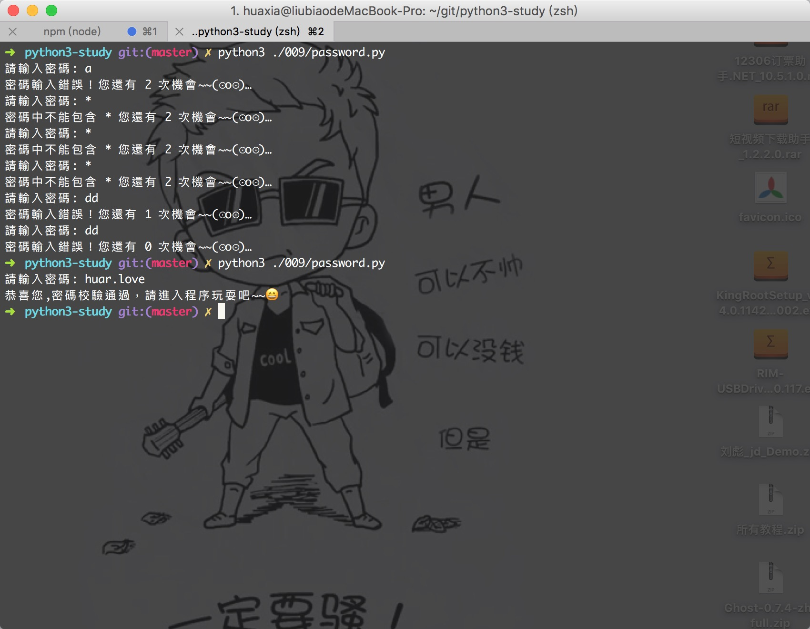
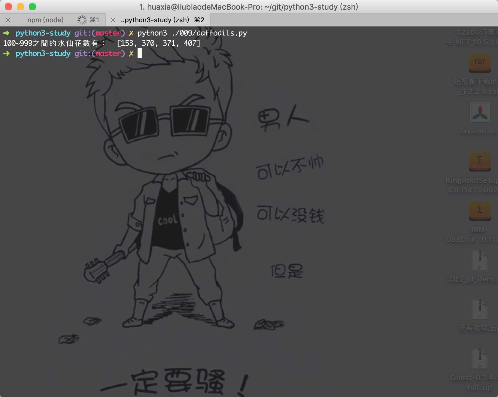
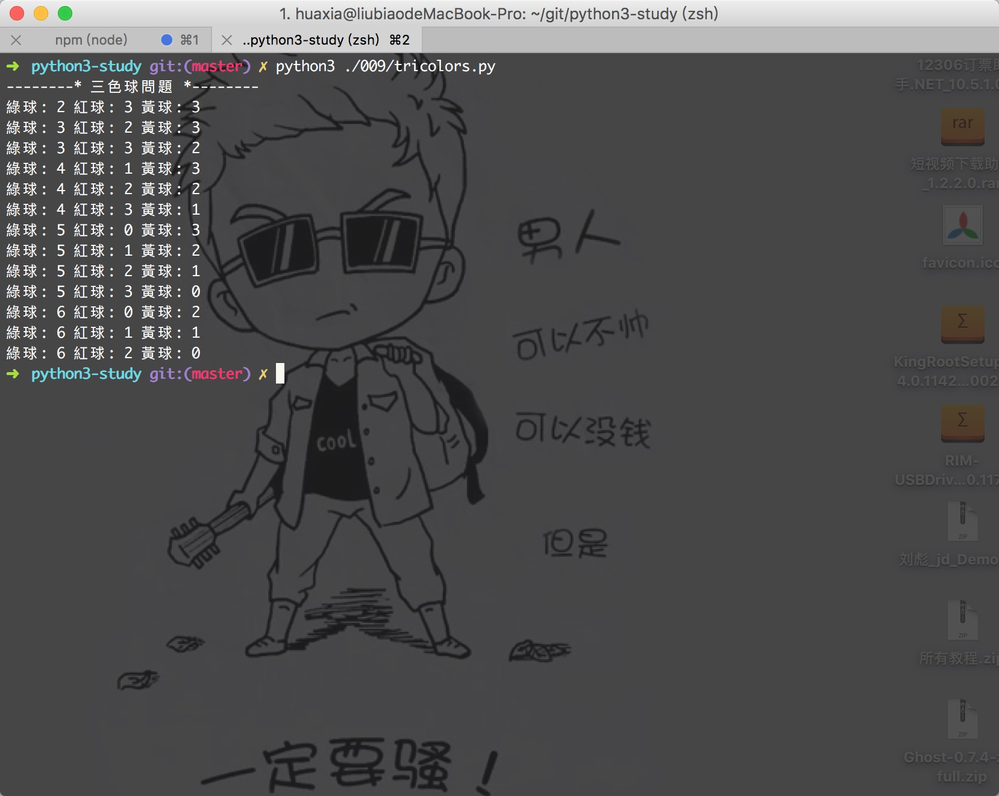

学习Python 009
測試題：
0.下面的循环会打印多少次"I Love Huaxia"？
for i in range(0, 10, 2):
print('I Love Huaxia')
5次
對於range(x, y, z),語法是：產生x~y之間的數，不包括y,z為步長；
1.下面的循环会打印多少次"I Love Huaxia"？
for i in 5:
print('I Love Huaxia')
会报错，上节课的课后习题我们提到了 in 是“成员资格运算符”，而不是像 C 语言那样去使用 for 语法。Python 的 for 更像脚本语言的 foreach。
2.回顾一下 break 和 continue 在循环中起到的作用
continue语句的作用是终止本轮循环并开始下一轮循环（这里要注意的是：在开始下一轮循环之前，会先测试循环条件）。
3.请谈下你对列表的理解
我覺得列表就像C語言中的數組，但是又不像是，因為python中的列表不限定類型，C語言是限定了類型的，python的列表更像是javascript中的數組吧，嘿，變量也是哦，因為他們都是弱類型的，賦值什麼就是什麼類型的。
4.请问 range(10) 生成哪些数？
会生成 range(0, 10)，list(range(0, 10)) 转换成列表是：[0, 1, 2, 3, 4, 5, 6, 7, 8, 9]，注意不包含 10 哦。
5.目测以下程序会打印什么？
while True:
while True:
break
print(1)
print(2)
break
print(3)
會打印：
2
3
6.什么情况下我们要使循环永远为真？
while Ture:
// 循環體
同样用于游戏实现，因为游戏只要运行着，就需要时刻接收用户输入，因此使用永远为真确保游戏“在线”。操作系统也是同样的道理，时刻待命，操作系统永远为真的这个循环叫做消息循环。另外，许多通讯服务器的客户端/服务器系统也是通过这样的原理来工作的。
所以永远为“真”虽然是“死循环”，但不一定是坏事，再说了，我们可以随时用 break 来跳出循环！
7.【学会提高代码的效率】你的觉得以下代码效率方面怎样？有没有办法可以大幅度改进(仍然使用while)？
i = 0
string = 'I Love huar.love'
while i < len(string)):
print(i)
i += 1
這段代碼降低效率的是在於每次都會計算 len();和javascript等等語言一樣，在外面計算好賦值一個變量，豈不是更好？
i = 0
string = 'I Love huar.love'
length = len(string))
while i < length:
print(i)
i += 1
動動手：
0.设计一个验证用户密码程序(密碼這裡使用
huar.love)，用户只有三次机会输入错误，不过如果用户输入的内容中包含"*"则不计算在内。
# 设计一个验证用户密码程序(密碼這裡使用huar.love);
# 用户只有三次机会输入错误;
# 不过如果用户输入的内容中包含"*"则不计算在内。
password = 'huar.love'
# 不能包含的特殊符號
specialCharacters = '*'
# 總共只有3次機會
count = 3
while count:
psd = input('請輸入密碼: ')
if password == psd:
print('恭喜您,密碼校驗通過，請進入程序玩耍吧<del>😄')
break
elif specialCharacters in psd:
print('密碼中不能包含', specialCharacters, '您還有', count, '次機會</del>(⊙o⊙)…')
else:
count -= 1
print('密碼輸入錯誤！您還有', count, '次機會~~(⊙o⊙)…')
程序運行看下面截圖

1.编写一个程序，求 100~999 之间的所有水仙花数。
如果一个 3 位数等于其各位数字的立方和，则称这个数为水仙花数。例如：153 = 1^3 + 5^3 + 3^3，因此 153 就是一个水仙花数
# 如果一个 3 位数等于其各位数字的立方和
# 则称这个数为水仙花数
# 例如：153 = 1^3 + 5^3 + 3^3
# 因此 153 就是一个水仙花数
# 100~999 之间的所有水仙花数
daffodils = []
for num in range(100, 1000):
sum = 0
temp = num
while temp:
sum += (temp % 10) ** 3
temp //= 10
if sum == num:
daffodils.append(num)
print('100~999之間的水仙花數有： ', daffodils)

2.三色球问题
有红、黄、蓝三种颜色的求，其中红球 3 个，黄球 3 个，绿球 6 个。先将这 12 个球混合放在一个盒子中，从中任意摸出 8 个球，编程计算摸出球的各种颜色搭配。
# 有红、黄、蓝三种颜色的球
# 其中红球 3 个，黄球 3 个，绿球 6 个
# 先将这 12 个球混合放在一个盒子中，从中任意摸出 8 个球，编程计算摸出球的各种颜色搭配。
# 首先摸出8個球中綠色至少2個，因為紅黃球總共是6個
# 所以綠球的範圍是 range(2, 7)
# 紅球的範圍是 range(0, 4)
# 黃球的範圍是 range(0, 4)
print('--------* 三色球問題 *--------')
sumNum = 8
for green in range(2, 7):
for red in range(0, min(4, sumNum - green + 1)):
# min(4, sumNum - green + 1) 這裡取 sumNum - green + 1
# 是因為sumNum - green這個數是可以range取到的
if sumNum - green - red <= 3:
print('綠球:', green, '紅球:', red, '黃球:', sumNum - green - red)


微信打賞

支付寶打賞